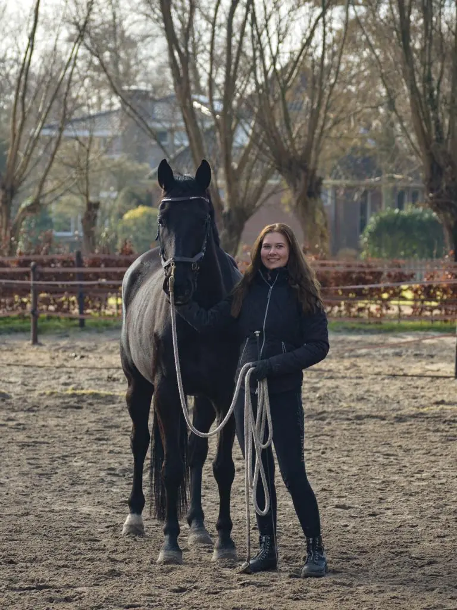

Proefles
€25
Vrijblijvend kennismaken en samen jullie doelen bespreken. De kosten zijn €25 excl. reiskosten.
Wat kun je verwachten van een proefles?
Geen paard en geen combinatie zijn hetzelfde. Daarom begint iedere begeleiding met goed kijken, luisteren en afstemmen.
Op basis van de informatie die ik van jou en je paard ontvang, jullie wensen en doelen en de ervaring en kennis die al aanwezig zijn, maken we een passend plan van aanpak.
Tijdens de proefles kijken we naar de huidige situatie: wat gaat er al goed, waar liggen de mogelijkheden en wat is er nodig om verder te groeien? Daarbij houden we rekening met wat haalbaar en realistisch is voor zowel jou als je paard.
Vanuit die basis gaan we praktisch aan de slag. We voegen nieuwe inzichten, oefeningen of kleine aanpassingen toe die aansluiten bij jullie behoeften. Zo werken we stap voor stap, op een manier die bij jullie past, toe naar het gewenste doel.